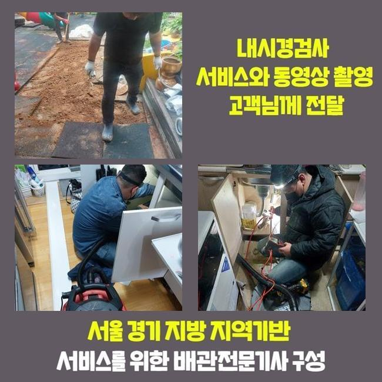
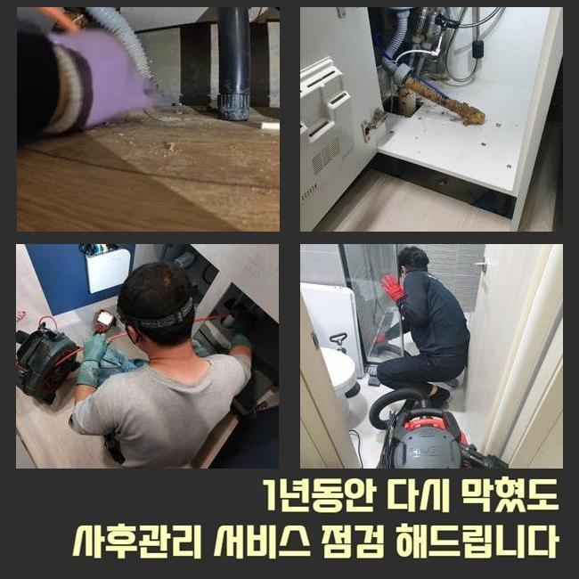
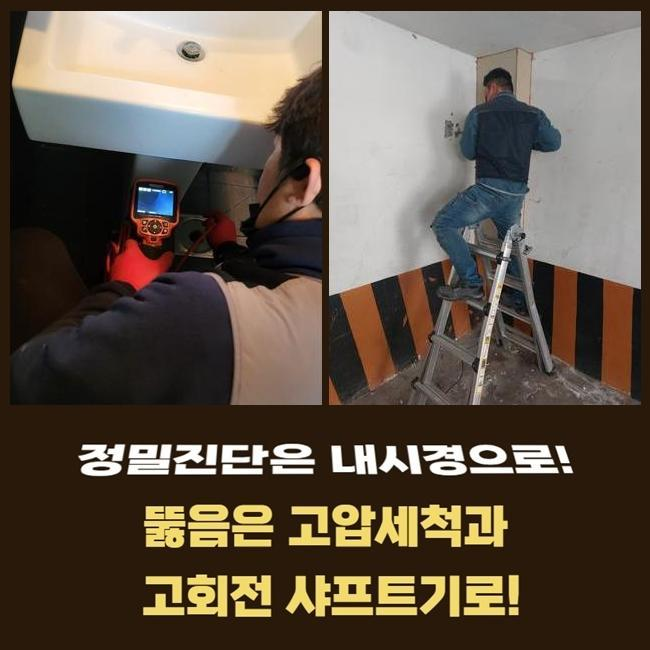
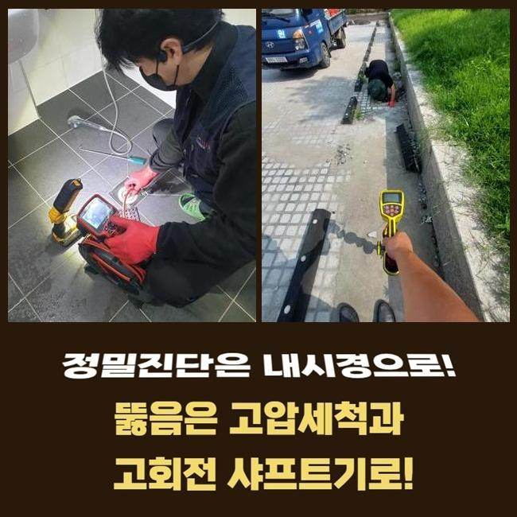
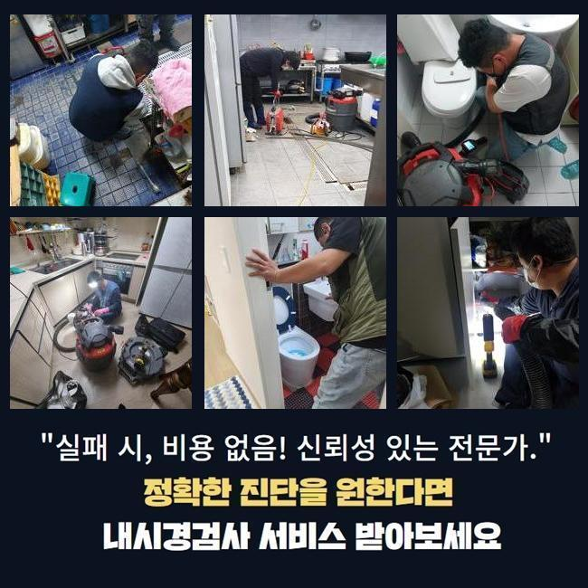
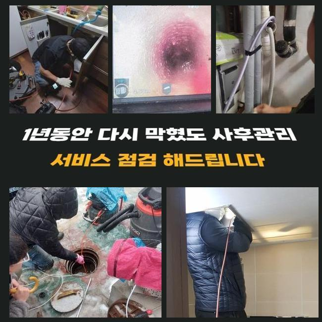
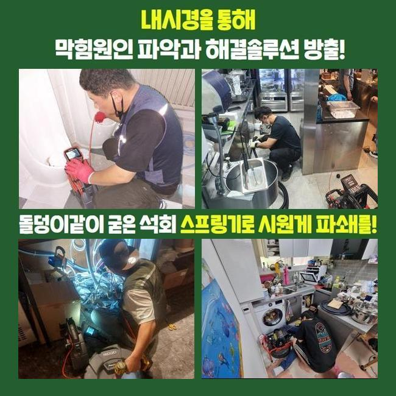

🏠 용인 상갈동씽크대배수구역류 동백동 하수관고압세척 통수전문
용인 싱크대막힘 전문 시공 후기

📋 작업 개요
- 위치: 용인
- 서비스 유형: 싱크대막힘, 하수구막힘, 배관막힘, 누수수리, 역류해결, 뚫는업체, 배관청소, 고압세척, 악취차단
- 작업 일시: 2025. 2. 15. 13:54
- 업체명: 하수구수사대 (010-5615-2118)
🔍 문제 상황
용인 상갈동씽크대배수구역류 동백동 하수관고압세척 통수전문
어떠한 곳이라도 배관이 막히면 빨리 내방해서 처리해내는 전문가입니다
많은분들께서 셀프조치를 취하실때 배수구 클리너나 락스같은 것들을 활용하실텐데요
락스같은것을 사용하게되면 배관내부에 퇴적되어있는 오염물질들을 소거하는데 도움은 됩니다
그렇지만 이런 방식들을 진행해도 제거하기 까다로운 이물이 있답니다
이물이 쌓이면서 덩어리지는 고착물질을 제거하는것은 어렵죠
석회물질의 경우에는 배관카메라를 활용하여 막힌상황에 대하여 알아본뒤 다양한 방식을 통해서 이물을 없애주는것이 요구됩니다
전문가에게 의뢰했을때 어떤식으로 단단한 이물질들을 제거해내는지 현장사례와 함께 알려드리도록 해볼게요
방문했던곳은 가정안에서 발생하게된 배관막힘 건이에요
화장실아래쪽 배수상태가 느려졌다고 하시면서 전화를 주신 것이죠
저흰 고객께서 말씀하신것과 현장상태를 살피면서 원인파악에 돌입했죠
고객님께선 하루전부터 배수상태가 점점 느려졌으며 이상한 악취도 동반되었다고 알려주셨죠

🔎 원인 분석
💡 전문가 진단: 정밀 진단 장비를 사용하여 슬러지의 고착 여부를 판명하고 타격/세척 작업을 실시했습니다.
직접 뚫어보려고 과탄산소다와 락스로 청소해보신 상황이었죠
그렇지만 냄새의경우 처리되지않고 물빠짐도 정상적으로 돌아오지 않으셨는데요
시간이지날수록 도리어 하수구는 심화된 상태로 막히게되서 저희업체로 의뢰주신 거에요
저흰 고객께서 전달해주신 증상들과 문제의 배수관을 살피면서 원인 찾기에 돌입했어요
악취현상이 일어난 하수구막힘은 막히게된 원인에 대하여 확실히 알아내는게 중요한 부분이에요
첫번째 과정으로 석션기계로 바닥쪽에 고여있는 물들을 제거한후 배관트랩을 분리해주기 시작했어요
배수구주위를 확인해봤는데 내시경없이는 원인파악이 불가했죠
하수구속을 살펴볼수있는 배관내시경을 투입해봤어요
내시경이 배관내에 투입하자마자 통로내에 잔해물들이 화면으로 나타났어요
그렇지만 막힘현상을 유발시킬 정도가 아니어서 안쪽으로 깊게 주입시켰더니 문제의 이유를 알아냈어요
각종 오염물들이 오랜기간 퇴적되버린 석회덩어리 이물이었어요
하수구안에서 누적된 덩어리이물은 배관안을 좁게하며 통로안에 여러 이물들이 지속적인 부패상태를 거치며 악취현상도 일어난겁니다

🔧 작업 과정
석회덩어리는 잔해물들이 뭉쳐지며 덩어리형태로 만들어지는데 배관막힘의 근본적인 원인임을 알수있겠죠
날이가면서 점점 단단해지고 제거방식도 굳은상태마다 차이점이 있답니다
현장에서 보였던 이물은 덩어리짐과 굳어진 형태가 심각해보이지 않아서 석션기를 통해서 없앨수있었죠
석션기계는 하수도내에 누적되어진 잔여물들을 흡입하는 기기라고 설명할수있어요
하수구내부가 손상되지않게 세척하고자 카메라를 같이 투입하여 수리해줬어요
내시경으로 살피면서 이물이 발견된 위치에서 석션기를 작동하여 이물질들을 소거시켰죠
하수관 가장 안쪽까지 배수관카메라로 살피면서 달라붙어있는 오염물과 슬러지를 없애주었는데요
오염물제거를 세세하게 진행한뒤 배관카메라로 다시한번 배관속을 체크하는걸 반복적으로 진행했는데요
반복적인 과정을 거치니 남겨져있었던 각종 찌든때와 오염물질들이 완벽히 청소된것이 화면에보였죠
오염물들을 배출하니 심각한 악취현상도 점점 사라졌어요
마치기전에 배수를 살펴보기위해 수전을틀어 배수에 대하여 테스트했죠
다량으로 잔해물을 빼냈으므로 걸리는 부분이없이 흘러가는걸 확인했는데요
테스트과정까지 끝내고나서 철수했는데요
여러번 말씀드렸지만 전문업체를 통해 해결하는것이 필요한이유를 설명드리자면 무엇때문에 막혔는지 확실하게 알수있어야 처리할수있는 것이랍니다
단단하게 굳어진 이물의 경우엔 클리너로 제거해내기가 쉽지않죠
혹여라도 방치한다면 누수나 역류문제로 이어질수가 있으므로 신속한 해결이 요구된답니다
딱딱한 상태로 슬러지가 고착화 되었으면 다른장비들이 필요합니다
샤프트기로 고착물을 분쇄시킬수 있으므로 막혀있는 상황마다 이용되는 장비들이 다를수있죠
하수도가 막히게 되었을때 주위에서 시도하는 셀프시도로 해결할수있다고 생각하십니다


✅ 작업 완료
다양한 방법들을 이용해도 물내려가는게 확실하게 내려가지않고 악취문제까지 하수도에서 올라올경우 전문업체를 통하여 해결하시는게 좋아요
화장실처럼 물이 빈번하게 이용되는곳은 주기적인 검사를받아 막힘문제들을 방지하는것이 중요하답니다
자가적으로 예방할수있는 과정들을 알려드려보면 하수구망이나 냄새차단 트랩들을 설치해보시면 악취증세와 막힘현상을 방지할수있죠
아파트나 빌라처럼 여러세대로 이뤄진 시설이라면 조속한 처리가 필요하니 언제나 의뢰주시면 빨리 방문드리도록 할게요!
작업하는 과정에있어 투명히 보여드리니 문제가 발생했을때 연락주신다면 상세히 안내 도와드릴게요




⚠️ 베란다 누수 및 방수 관리 방법
- ✅ 비가 많이 올 때 창틀 주변이나 아래층 천장에 얼룩이 생기는지 정기적으로 확인해 보세요.
- ✅ 우수관 주변 실리콘 마감이 들뜨거나 깨진 틈새가 있는지 손상 여부를 수시로 체크하세요.
- ✅ 베란다 바닥 타일의 줄눈(메지)이 소실되면 그 틈으로 물이 침투하여 누수가 유발됩니다.
- ✅ 누수 의심 증상 발견 시 방치하면 아래층 손실이 커지므로 즉시 전문가의 진단을 받으십시오.
💡 핵심 정리
- 확실한 장비 작업(내시경 점검 및 샤프트 스케일링)으로 원인을 뿌리 뽑습니다.
- 작업 후 1년 이내에 동일한 부위 재발 시 100% 무상 A/S 서비스를 보장합니다.
- 서울 · 경기 · 인천 전 지역에 24시간 언제든 긴급 출동할 수 있도록 항시 대기 중입니다.
❓ 자주 묻는 질문 (FAQ)
🚨 용인 싱크대막힘 문제로 고민이신가요?
정확한 원인 진단과 확실한 시공으로 재발 없는 해결을 약속드립니다.
24시간 긴급 출동 | 서울 · 경기 · 인천 전지역 | 1년 내 재발 시 무상 A/S